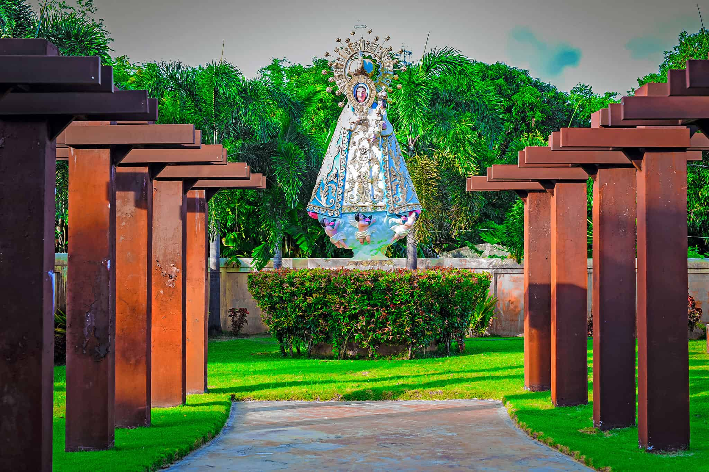

For 25 years, Forest Lake has been serving its communities and is now the Philippines’ largest memorial care brand with
more than 30 parks nationwide across Luzon, Visayas and Mindanao.
The company opened its first memorial park in the Philippines in 1997 with Forest Lake Zamboanga and within the same
year they launched Forest Lake Iloilo. In the following years, the company continued to expand briskly, opening one park
after another, serving community after community. Their signature personalized service and nature-themed,
family-friendly and efficiently-designed parks boasting wide open spaces with vast manicured lawns conducive to leisure
and relaxation quickly established Forest Lake as the preferred park where family memories are celebrated by the living.
In 2018, Forest Lake launched its Grief Therapy Program, “A Better Day ~ Your Journey to Healing.” The workshop series facilitated by Grief Coach Cathy Babao offered support to bereaved clients by guiding them on a path towards healing and wholeness so that they may live healthy, productive and happy lives after their loss. Given the challenging times brought about by the 2020 COVID-19 pandemic, the company began its online advocacy, “Creating Better Days” webinar series advocating mental health and well-being. Recognizing that the pandemic has changed the way we grieve and come to terms with loss, the free webinar series aims to empower its audience with the knowledge and tools needed to thrive in our brand new world by teaching us how to adapt and create a better now.
Behind Forest Lake Memorial Parks is a formidable management team with extensive experience in property development, memorial services, sales and marketing. The company currently has more than 30 memorial parks in the Philippines and one chapel in Biñan, Laguna. Its portfolio spans Luzon, Visayas and Mindanao in the following locations: Albay, Bataan, Bulacan, Davao del Sur, Iloilo, Laguna, La Union, Misamis Oriental, Negros Occidental, Nueva Ecija, Pampanga, Pangasinan, South Cotabato, Tarlac and Zamboanga. The company aims to be A Better Place where the memories of our loved ones are celebrated and immortalized while consistently expanding the business to serve more Filipinos. Click here to find a Forest Lake park near you.
For more information about Forest Lake, email info@forestlakeparks.com and follow @ForestLakeMemorialParks on Facebook and Instagram.
In 2018, Forest Lake launched its Grief Therapy Program, “A Better Day ~ Your Journey to Healing.” The workshop series facilitated by Grief Coach Cathy Babao offered support to bereaved clients by guiding them on a path towards healing and wholeness so that they may live healthy, productive and happy lives after their loss. Given the challenging times brought about by the 2020 COVID-19 pandemic, the company began its online advocacy, “Creating Better Days” webinar series advocating mental health and well-being. Recognizing that the pandemic has changed the way we grieve and come to terms with loss, the free webinar series aims to empower its audience with the knowledge and tools needed to thrive in our brand new world by teaching us how to adapt and create a better now.
Behind Forest Lake Memorial Parks is a formidable management team with extensive experience in property development, memorial services, sales and marketing. The company currently has more than 30 memorial parks in the Philippines and one chapel in Biñan, Laguna. Its portfolio spans Luzon, Visayas and Mindanao in the following locations: Albay, Bataan, Bulacan, Davao del Sur, Iloilo, Laguna, La Union, Misamis Oriental, Negros Occidental, Nueva Ecija, Pampanga, Pangasinan, South Cotabato, Tarlac and Zamboanga. The company aims to be A Better Place where the memories of our loved ones are celebrated and immortalized while consistently expanding the business to serve more Filipinos. Click here to find a Forest Lake park near you.
For more information about Forest Lake, email info@forestlakeparks.com and follow @ForestLakeMemorialParks on Facebook and Instagram.